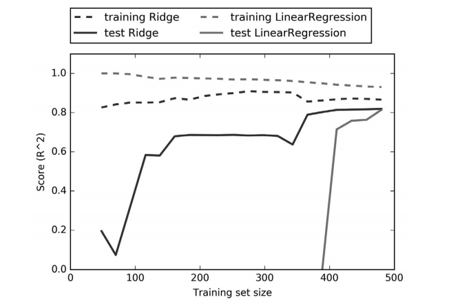

 <!DOCTYPE HTML>
<html lang="zh-CN">
<head><meta name="generator" content="Hexo 3.8.0">
  <meta charset="UTF-8">
  
    <title>Python机器学习基础教程（3）:线性模型 | 成华的个人博客</title>
    <meta name="viewport" content="width=device-width, initial-scale=1,user-scalable=no">
    
    <meta name="author" content="Cheng Hua">
    

    
    <meta name="description" content="何为线性模型？ 因线性模型是利用输入特征的线性函数进行预测结果的，所以称我们学得的模型为线性模型。   用于回归的线性模型 线性模型的一般公式  ŷ = w[0]  x[0] + w[1]  x[1] + … + w[p] * x[p] + b  这里 x[0] 到 x[p] 表示单个数据点的特征，w 和 b 是学习模型的参数， ŷ 是模型的预测结果。 特别的，对于单个特征的线性模型： ŷ =">
<meta name="keywords" content="machine-learning">
<meta property="og:type" content="article">
<meta property="og:title" content="Python机器学习基础教程（3）:线性模型">
<meta property="og:url" content="http://dayAndnight2018.github.io/2019/02/15/2019021501/index.html">
<meta property="og:site_name" content="成华的个人博客">
<meta property="og:description" content="何为线性模型？ 因线性模型是利用输入特征的线性函数进行预测结果的，所以称我们学得的模型为线性模型。   用于回归的线性模型 线性模型的一般公式  ŷ = w[0]  x[0] + w[1]  x[1] + … + w[p] * x[p] + b  这里 x[0] 到 x[p] 表示单个数据点的特征，w 和 b 是学习模型的参数， ŷ 是模型的预测结果。 特别的，对于单个特征的线性模型： ŷ =">
<meta property="og:locale" content="zh-CN">
<meta property="og:image" content="http://dayandnight2018.github.io/2019/02/15/2019021501/学习曲线.png">
<meta property="og:updated_time" content="2019-02-20T14:15:03.307Z">
<meta name="twitter:card" content="summary">
<meta name="twitter:title" content="Python机器学习基础教程（3）:线性模型">
<meta name="twitter:description" content="何为线性模型？ 因线性模型是利用输入特征的线性函数进行预测结果的，所以称我们学得的模型为线性模型。   用于回归的线性模型 线性模型的一般公式  ŷ = w[0]  x[0] + w[1]  x[1] + … + w[p] * x[p] + b  这里 x[0] 到 x[p] 表示单个数据点的特征，w 和 b 是学习模型的参数， ŷ 是模型的预测结果。 特别的，对于单个特征的线性模型： ŷ =">
<meta name="twitter:image" content="http://dayandnight2018.github.io/2019/02/15/2019021501/学习曲线.png">

    
    <link rel="alternative" href="/atom.xml" title="成华的个人博客" type="application/atom+xml">
    
    
    <link rel="icon" href="/img/favicon.ico">
    
    
    <link rel="apple-touch-icon" href="/img/jacman.jpg">
    <link rel="apple-touch-icon-precomposed" href="/img/jacman.jpg">
    
    <link rel="stylesheet" href="/css/style.css">
</head>
</html>
  <body>
    <header>
      
<div>
		
			<div id="imglogo">
				<a href="/"></a>
			</div>
			
			<div id="textlogo">
				<h1 class="site-name"><a href="/" title="成华的个人博客">成华的个人博客</a></h1>
				<h2 class="blog-motto">爱生活，爱编程</h2>
			</div>
			<div class="navbar"><a class="navbutton navmobile" href="#" title="菜单">
			</a></div>
			<nav class="animated">
				<ul>
					<ul>
					 
						<li><a href="/">首页</a></li>
					
						<li><a href="/archives">归档</a></li>
					
						<li><a href="/tags">标签</a></li>
					
						<li><a href="/categories">分类</a></li>
					
					<li>
 					
					<form class="search" action="//google.com/search" method="get" accept-charset="utf-8">
						<label>Search</label>
						<input type="search" id="search" name="q" autocomplete="off" maxlength="20" placeholder="搜索">
						<input type="hidden" name="q" value="site:dayAndnight2018.github.io">
					</form>
					
					</li>
				</ul>
			</ul></nav>			
</div>
    </header>
    <div id="container">
      <div id="main" class="post" itemscope="" itemprop="blogPost">
  
	<article itemprop="articleBody"> 
		<header class="article-info clearfix">
  <h1 itemprop="name">
    
      <a href="/2019/02/15/2019021501/" title="Python机器学习基础教程（3）:线性模型" itemprop="url">Python机器学习基础教程（3）:线性模型</a>
  </h1>
  <p class="article-author">By
       
		<a href="/about" title="Cheng Hua" target="_blank" itemprop="author">Cheng Hua</a>
		
  </p><p class="article-time">
    <time datetime="2019-02-15T09:42:46.000Z" itemprop="datePublished"> 发表于 2019-02-15</time>
    
  </p>
</header>
	<div class="article-content">
		
		<a id="more"></a>
<blockquote>
<h2 id="何为线性模型？"><a href="#何为线性模型？" class="headerlink" title="何为线性模型？"></a>何为线性模型？</h2></blockquote>
<p>因线性模型是利用输入特征的线性函数进行预测结果的，所以称我们学得的模型为线性模型。</p>

<blockquote>
<h2 id="用于回归的线性模型"><a href="#用于回归的线性模型" class="headerlink" title="用于回归的线性模型"></a>用于回归的线性模型</h2></blockquote>
<div style="margin-top:10px;margin-bottom:10px;"><span style="color: dodgerblue;font-size: 25px; font-family: '宋体';font-weight:bold; background:silver;padding:5px 10px;border-radius:10px;">线性模型的一般公式</span></div>

<div style="background:lightyellow;padding:5px 10px;">ŷ = w[0] <em> x[0] + w[1] </em> x[1] + … + w[p] * x[p] + b</div>

<p>这里 x[0] 到 x[p] 表示单个数据点的<code>特征</code>，w 和 b 是学习模型的<code>参数</code>， ŷ 是模型的<code>预测结果</code>。</p>
<p>特别的，对于单个特征的线性模型：</p>
<div style="background:lightyellow;padding:5px 10px;">ŷ = w[0] * x[0] + b</div>

<p>这就简化成了我们数学中的直线方程。</p>
<p>用于回归的线性模型可以表示为这样的回归模型：对单一特征的预测结果是一条直线，两个特征时是一个平面，或者在更高维度（即更多特征）时是一个超平面。</p>
<div style="margin-top:10px;margin-bottom:10px;"><span style="color: dodgerblue;font-size: 25px; font-family: '宋体';font-weight:bold; background:silver;padding:5px 10px;border-radius:10px;">线性回归（最小二乘法）</span></div>

<p>线性回归，是最经典的线性方法。线性回归寻找参数 w 和 b，使得对训练集的预测值与真实的回归目标值 y之间的均方误差最小。</p>
<div style="background:lightyellow;padding:5px 10px;">均方误差是预测值与真实值之差的平方和除以样本数。</div>

<p><strong>线性回归的一般步骤：</strong></p>
<ol>
<li>导入数据集，划分训练集及测试集</li>
</ol>
<figure class="highlight plain"><table><tr><td class="gutter"><pre><span class="line">1</span><br><span class="line">2</span><br></pre></td><td class="code"><pre><span class="line">X, y = mglearn.datasets.make_wave(n_samples=60)</span><br><span class="line">X_train, X_test, y_train, y_test = train_test_split(X, y, random_state=42)</span><br></pre></td></tr></table></figure>
<p>2.导入线性回归器，训练数据集</p>
<figure class="highlight plain"><table><tr><td class="gutter"><pre><span class="line">1</span><br><span class="line">2</span><br></pre></td><td class="code"><pre><span class="line">from sklearn.linear_model import LinearRegression</span><br><span class="line">lr = LinearRegression().fit(X_train, y_train)</span><br></pre></td></tr></table></figure>
<ol start="3">
<li>参数w保存在lr的coef_中，截距保存在intercept_中</li>
</ol>
<figure class="highlight plain"><table><tr><td class="gutter"><pre><span class="line">1</span><br><span class="line">2</span><br></pre></td><td class="code"><pre><span class="line">print(&quot;lr.coef_: &#123;&#125;&quot;.format(lr.coef_))</span><br><span class="line">print(&quot;lr.intercept_: &#123;&#125;&quot;.format(lr.intercept_))</span><br></pre></td></tr></table></figure>
<p><code>输出显示 &gt;&gt;</code></p>
<figure class="highlight plain"><table><tr><td class="gutter"><pre><span class="line">1</span><br><span class="line">2</span><br></pre></td><td class="code"><pre><span class="line">lr.coef_: [ 0.394]</span><br><span class="line">lr.intercept_: -0.031804343026759746</span><br></pre></td></tr></table></figure>
<ol start="4">
<li>在测试集上测试性能</li>
</ol>
<figure class="highlight plain"><table><tr><td class="gutter"><pre><span class="line">1</span><br><span class="line">2</span><br></pre></td><td class="code"><pre><span class="line">print(&quot;Training set score: &#123;:.2f&#125;&quot;.format(lr.score(X_train, y_train)))</span><br><span class="line">print(&quot;Test set score: &#123;:.2f&#125;&quot;.format(lr.score(X_test, y_test)))</span><br></pre></td></tr></table></figure>
<p><code>输出显示 &gt;&gt;</code></p>
<figure class="highlight plain"><table><tr><td class="gutter"><pre><span class="line">1</span><br><span class="line">2</span><br></pre></td><td class="code"><pre><span class="line">Training set score: 0.67</span><br><span class="line">Test set score: 0.66</span><br></pre></td></tr></table></figure>
<p>R^2=0.66</p>
<div style="margin-top:10px;margin-bottom:10px;"><span style="color: dodgerblue;font-size: 25px; font-family: '宋体';font-weight:bold; background:silver;padding:5px 10px;border-radius:10px;">岭回归模型</span></div>

<p><code>岭回归</code>也是一种用于回归的线性模型，因此它的预测公式与普通最小二乘法相同。但在岭回归中，对系数（w）的选择不仅要在训练数据上得到好的预测结果，而且还要拟合附加约束（正则化）–<code>系数尽量小</code>,即每个特征对输出的影响应尽可能小，同时仍给出很好的预测结果。</p>
<p><strong>岭回归的一般步骤：</strong></p>
<ol>
<li>导入模块，训练模型</li>
</ol>
<figure class="highlight plain"><table><tr><td class="gutter"><pre><span class="line">1</span><br><span class="line">2</span><br></pre></td><td class="code"><pre><span class="line">from sklearn.linear_model import Ridge</span><br><span class="line">ridge = Ridge().fit(X_train, y_train)</span><br></pre></td></tr></table></figure>
<ol start="2">
<li>在训练集和测试集上给出精度</li>
</ol>
<figure class="highlight plain"><table><tr><td class="gutter"><pre><span class="line">1</span><br><span class="line">2</span><br></pre></td><td class="code"><pre><span class="line">print(&quot;Training set score: &#123;:.2f&#125;&quot;.format(ridge.score(X_train, y_train)))</span><br><span class="line">print(&quot;Test set score: &#123;:.2f&#125;&quot;.format(ridge.score(X_test, y_test)))</span><br></pre></td></tr></table></figure>
<p><code>输出显示 &gt;&gt;</code></p>
<figure class="highlight plain"><table><tr><td class="gutter"><pre><span class="line">1</span><br><span class="line">2</span><br></pre></td><td class="code"><pre><span class="line">Training set score: 0.67</span><br><span class="line">Test set score: 0.66</span><br></pre></td></tr></table></figure>
<div style="background:lightyellow;padding:5px 10px;">我们发现岭回归在训练集上的精度要低一些，但是在测试集上的精度要比线性回归要高。这就意味着，岭回归的泛化能力更强一些。</div>

<p>在上述的岭回归模型训练中，默认的Ridge（alpha=1.0）,这里的alpha指的是L2正则化的程度，alpha越大，惩罚程度越高，W越接近0，反之，惩罚越小，W越远离0.</p>
<p>在保持alpha不变的情况下，通过改变训练数据集的大小，可以看到不同的效果。</p>
<p></p>
<div style="background:lightyellow;padding:5px 10px;">一般来说，训练集上的性能要比测试集上的性能要好一些。由于岭回归添加了L2正则化，所以在数据集较小的情况下仍然可以达到较高的性能。同时，数据集较大的时候，岭回归就不再具备优越性。</div>

<div style="margin-top:10px;margin-bottom:10px;"><span style="color: dodgerblue;font-size: 25px; font-family: '宋体';font-weight:bold; background:silver;padding:5px 10px;border-radius:10px;">Lasso回归模型</span></div>

<p><code>Lasso回归模型</code>与岭回归类似，也对参数进行了约束，但与之不同的是采用的是L1正则化，使得某些系数刚好为0，即忽略部分特征对预测结果的影响，这也是一种自动化的特征选择。</p>
<p><strong>Lasso一般步骤：</strong></p>
<figure class="highlight plain"><table><tr><td class="gutter"><pre><span class="line">1</span><br><span class="line">2</span><br><span class="line">3</span><br><span class="line">4</span><br><span class="line">5</span><br></pre></td><td class="code"><pre><span class="line">from sklearn.linear_model import Lasso</span><br><span class="line">lasso = Lasso().fit(X_train, y_train)</span><br><span class="line">print(&quot;Training set score: &#123;:.2f&#125;&quot;.format(lasso.score(X_train, y_train)))</span><br><span class="line">print(&quot;Test set score: &#123;:.2f&#125;&quot;.format(lasso.score(X_test, y_test)))</span><br><span class="line">print(&quot;Number of features used: &#123;&#125;&quot;.format(np.sum(lasso.coef_ != 0)))</span><br></pre></td></tr></table></figure>
<p><code>输出显示 &gt;&gt;</code></p>
<figure class="highlight plain"><table><tr><td class="gutter"><pre><span class="line">1</span><br><span class="line">2</span><br><span class="line">3</span><br></pre></td><td class="code"><pre><span class="line">Training set score: 0.29</span><br><span class="line">Test set score: 0.21</span><br><span class="line">Number of features used: 4</span><br></pre></td></tr></table></figure>
<div style="background:lightyellow;padding:5px 10px;">我们发现，效果并不是特别好。这里Lasso也有一个默认的参数，alpha，我们可以尝试修改它，同时也需要调节另外一个参数，max_iter。</div>

<figure class="highlight plain"><table><tr><td class="gutter"><pre><span class="line">1</span><br><span class="line">2</span><br><span class="line">3</span><br><span class="line">4</span><br><span class="line">5</span><br></pre></td><td class="code"><pre><span class="line"># 我们增大max_iter的值，否则模型会警告我们，说应该增大max_iter</span><br><span class="line">lasso001 = Lasso(alpha=0.01, max_iter=100000).fit(X_train, y_train)</span><br><span class="line">print(&quot;Training set score: &#123;:.2f&#125;&quot;.format(lasso001.score(X_train, y_train)))</span><br><span class="line">print(&quot;Test set score: &#123;:.2f&#125;&quot;.format(lasso001.score(X_test, y_test)))</span><br><span class="line">print(&quot;Number of features used: &#123;&#125;&quot;.format(np.sum(lasso001.coef_ != 0)))</span><br></pre></td></tr></table></figure>
<p><code>输出显示 &gt;&gt;</code></p>
<figure class="highlight plain"><table><tr><td class="gutter"><pre><span class="line">1</span><br><span class="line">2</span><br><span class="line">3</span><br></pre></td><td class="code"><pre><span class="line">Training set score: 0.90</span><br><span class="line">Test set score: 0.77</span><br><span class="line">Number of features used: 33</span><br></pre></td></tr></table></figure>
<div style="background:lightyellow;padding:5px 10px;">在实践中，在两个模型中一般首选岭回归。但如果特征很多，你认为只有其中几个是重要的，那么选择 Lasso 可能更好。 scikit-learn 还提供了 ElasticNet类，结合了 Lasso 和 Ridge 的惩罚项。在实践中，这种结合的效果最好，不过代价是要调节两个参数：一个用于 L1 正则化，一个用于 L2 正则化。</div>

<blockquote>
<h2 id="用于分类的线性模型"><a href="#用于分类的线性模型" class="headerlink" title="用于分类的线性模型"></a>用于分类的线性模型</h2></blockquote>
<blockquote>
<p><code>分类</code>:对事物的类别进行确定。通常情况下，所有可能的类别是事先确知的。</p>
</blockquote>
<div style="background:lightyellow;padding:5px 10px;">通常将类别只有两种情况的分类称为<b>二分类问题</b>，将类别有多种情况的分类称为<b>多分类问题</b>。<br>二分类问题中，我们把其中一类称为<b>“正类”</b>，另一类称为<b>“反类”</b></div>

<p><code>回归</code>:对某种连续值的预测。根据教育水平、年龄和居住地来预测一个人的年收入，这就是回归的一个例子。</p>
  
	</div>
		<footer class="article-footer clearfix">
<div class="article-catetags">

<div class="article-categories">
  <span></span>
  <a class="article-category-link" href="/categories/machine-learning/">machine-learning</a>
</div>


  <div class="article-tags">
  
  <span></span> <a href="/tags/machine-learning/">machine-learning</a>
  </div>

</div>


	<div class="article-share" id="share">
	
	  <div data-url="http://dayAndnight2018.github.io/2019/02/15/2019021501/" data-title="Python机器学习基础教程（3）:线性模型 | 成华的个人博客" data-tsina="" class="share clearfix">
	  </div>
	
	</div>


</footer>

   	       
	</article>
	
<nav class="article-nav clearfix">
 
 <div class="prev">
 <a href="/2019/03/04/java001-2019030401/" title="《Java核心技术》001">
  <strong>上一篇：</strong><br>
  <span>
  《Java核心技术》001</span>
</a>
</div>


<div class="next">
<a href="/2019/02/14/2019021401/" title="Python机器学习基础教程（2）:监督学习初步及K近邻算法">
 <strong>下一篇：</strong><br> 
 <span>Python机器学习基础教程（2）:监督学习初步及K近邻算法
</span>
</a>
</div>

</nav>

	


</div>  
      <div class="openaside"><a class="navbutton" href="#" title="显示侧边栏"></a></div>

  <div id="toc" class="toc-aside">
  <strong class="toc-title">文章目录</strong>
 
 <ol class="toc"><li class="toc-item toc-level-2"><a class="toc-link" href="#何为线性模型？"><span class="toc-number">1.</span> <span class="toc-text">何为线性模型？</span></a></li><li class="toc-item toc-level-2"><a class="toc-link" href="#用于回归的线性模型"><span class="toc-number">2.</span> <span class="toc-text">用于回归的线性模型</span></a></li><li class="toc-item toc-level-2"><a class="toc-link" href="#用于分类的线性模型"><span class="toc-number">3.</span> <span class="toc-text">用于分类的线性模型</span></a></li></ol>
 
  </div>

<div id="asidepart">
<div class="closeaside"><a class="closebutton" href="#" title="隐藏侧边栏"></a></div>
<aside class="clearfix">

  
<div class="github-card">
<p class="asidetitle">Github 名片</p>
<div class="github-card" data-github="dayAndnight2018" data-theme="medium"></div>
<script type="text/javascript" src="//cdn.jsdelivr.net/github-cards/latest/widget.js"></script>
</div>


  
<div class="categorieslist">
	<p class="asidetitle">分类</p>
		<ul>
		
		  
			<li><a href="/categories/Java/" title="Java">Java<sup>1</sup></a></li>
		  
		
		  
			<li><a href="/categories/blog/" title="blog">blog<sup>1</sup></a></li>
		  
		
		  
			<li><a href="/categories/machine-learning/" title="machine-learning">machine-learning<sup>3</sup></a></li>
		  
		
		  
			<li><a href="/categories/resource/" title="resource">resource<sup>2</sup></a></li>
		  
		
		</ul>
</div>


  
<div class="tagslist">
	<p class="asidetitle">标签</p>
		<ul class="clearfix">
		
			
				<li><a href="/tags/machine-learning/" title="machine-learning">machine-learning<sup>3</sup></a></li>
			
		
			
				<li><a href="/tags/resource/" title="resource">resource<sup>2</sup></a></li>
			
		
			
				<li><a href="/tags/Java/" title="Java">Java<sup>1</sup></a></li>
			
		
			
				<li><a href="/tags/blog/" title="blog">blog<sup>1</sup></a></li>
			
		
		</ul>
</div>


  <div class="linkslist">
  <p class="asidetitle">友情链接</p>
    <ul>
        
          <li>
            
            	<a href="http://www.java1234.com" target="_blank" title="一个JAVA资源丰富的站点">JAVA社区</a>
            
          </li>
        
          <li>
            
            	<a href="http://www.jb51.net" target="_blank" title="一个电子书资源站点">JB51论坛</a>
            
          </li>
        
          <li>
            
            	<a href="http://www.allitebooks.com" target="_blank" title="一个英文电子书站点">Allitebooks</a>
            
          </li>
        
    </ul>
</div>

  


  <div class="rsspart">
	<a href="/atom.xml" target="_blank" title="rss">RSS 订阅</a>
</div>

  <div class="weiboshow">
  <p class="asidetitle">新浪微博</p>
    <iframe width="100%" height="119" class="share_self" frameborder="0" scrolling="no" src="http://widget.weibo.com/weiboshow/index.php?language=&width=0&height=119&fansRow=2&ptype=1&speed=0&skin=9&isTitle=1&noborder=1&isWeibo=0&isFans=0&uid=&verifier=b3593ceb&dpc=1"></iframe>
</div>


</aside>
</div>
    </div>
    <footer><div id="footer">
	
	<div class="line">
		<span></span>
		<div class="author"></div>
	</div>
	
	
	<section class="info">
		<p> 决定成功的是你自己 <br>
			Start，and stick.</p>
	</section>
	 
	<div class="social-font">
		
		
		<a href="https://github.com/dayAndnight2018" target="_blank" class="icon-github" title="github"></a>
		
		
		
		
		
		
		
		
		
	</div>
			
		

		<p class="copyright">
		Powered by <a href="http://hexo.io" target="_blank" title="hexo">hexo</a> and Theme by <a href="https://github.com/wuchong/jacman" target="_blank" title="Jacman">Jacman</a> © 2019 
		
		<a href="/about" target="_blank" title="Cheng Hua">Cheng Hua</a>
		
		
		</p>
</div>
</footer>
    <script src="/js/jquery-2.0.3.min.js"></script>
<script src="/js/jquery.imagesloaded.min.js"></script>
<script src="/js/gallery.js"></script>
<script src="/js/jquery.qrcode-0.12.0.min.js"></script>

<script type="text/javascript">
$(document).ready(function(){ 
  $('.navbar').click(function(){
    $('header nav').toggleClass('shownav');
  });
  var myWidth = 0;
  function getSize(){
    if( typeof( window.innerWidth ) == 'number' ) {
      myWidth = window.innerWidth;
    } else if( document.documentElement && document.documentElement.clientWidth) {
      myWidth = document.documentElement.clientWidth;
    };
  };
  var m = $('#main'),
      a = $('#asidepart'),
      c = $('.closeaside'),
      o = $('.openaside');
  c.click(function(){
    a.addClass('fadeOut').css('display', 'none');
    o.css('display', 'block').addClass('fadeIn');
    m.addClass('moveMain');
  });
  o.click(function(){
    o.css('display', 'none').removeClass('beforeFadeIn');
    a.css('display', 'block').removeClass('fadeOut').addClass('fadeIn');      
    m.removeClass('moveMain');
  });
  $(window).scroll(function(){
    o.css("top",Math.max(80,260-$(this).scrollTop()));
  });
  
        getSize();
        if (myWidth >= 1024) {
          c.click();
        }
  
  $(window).resize(function(){
    getSize(); 
    if (myWidth >= 1024) {
      $('header nav').removeClass('shownav');
    }else{
      m.removeClass('moveMain');
      a.css('display', 'block').removeClass('fadeOut');
      o.css('display', 'none');
      
      $('#toc.toc-aside').css('display', 'none');
        
    }
  });
});
</script>

<script type="text/javascript">
$(document).ready(function(){ 
  var ai = $('.article-content>iframe'),
      ae = $('.article-content>embed'),
      t  = $('#toc'),
      ta = $('#toc.toc-aside'),
      o  = $('.openaside'),
      c  = $('.closeaside');
  if(ai.length>0){
    ai.wrap('<div class="video-container" />');
  };
  if(ae.length>0){
   ae.wrap('<div class="video-container" />');
  };
  c.click(function(){
    ta.css('display', 'block').addClass('fadeIn');
  });
  o.click(function(){
    ta.css('display', 'none');
  });
  $(window).scroll(function(){
    ta.css("top",Math.max(140,320-$(this).scrollTop()));
  });
});
</script>


<script type="text/javascript">
$(document).ready(function(){ 
  var $this = $('.share'),
      url = $this.attr('data-url'),
      encodedUrl = encodeURIComponent(url),
      title = $this.attr('data-title'),
      tsina = $this.attr('data-tsina'),
      description = $this.attr('description');
  var html = [
  '<div class="hoverqrcode clearfix"></div>',
  '<a class="overlay" id="qrcode"></a>',
  '<a href="https://www.facebook.com/sharer.php?u=' + encodedUrl + '" class="article-share-facebook" target="_blank" title="Facebook"></a>',
  '<a href="https://twitter.com/intent/tweet?url=' + encodedUrl + '" class="article-share-twitter" target="_blank" title="Twitter"></a>',
  '<a href="#qrcode" class="article-share-qrcode" title="微信"></a>',
  '<a href="http://widget.renren.com/dialog/share?resourceUrl=' + encodedUrl + '&srcUrl=' + encodedUrl + '&title=' + title +'" class="article-share-renren" target="_blank" title="人人"></a>',
  '<a href="http://service.weibo.com/share/share.php?title='+title+'&url='+encodedUrl +'&ralateUid='+ tsina +'&searchPic=true&style=number' +'" class="article-share-weibo" target="_blank" title="微博"></a>',
  '<span title="Share to"></span>'
  ].join('');
  $this.append(html);

  $('.hoverqrcode').hide();

  var myWidth = 0;
  function updatehoverqrcode(){
    if( typeof( window.innerWidth ) == 'number' ) {
      myWidth = window.innerWidth;
    } else if( document.documentElement && document.documentElement.clientWidth) {
      myWidth = document.documentElement.clientWidth;
    };
    var qrsize = myWidth > 1024 ? 200:100;
    var options = {render: 'image', size: qrsize, fill: '#2ca6cb', text: url, radius: 0.5, quiet: 1};
    var p = $('.article-share-qrcode').position();
    $('.hoverqrcode').empty().css('width', qrsize).css('height', qrsize)
                          .css('left', p.left-qrsize/2+20).css('top', p.top-qrsize-10)
                          .qrcode(options);
  };
  $(window).resize(function(){
    $('.hoverqrcode').hide();
  });
  $('.article-share-qrcode').click(function(){
    updatehoverqrcode();
    $('.hoverqrcode').toggle();
  });
  $('.article-share-qrcode').hover(function(){}, function(){
      $('.hoverqrcode').hide();
  });
});   
</script>


<link rel="stylesheet" href="/fancybox/jquery.fancybox.css" media="screen" type="text/css">
<script src="/fancybox/jquery.fancybox.pack.js"></script>
<script type="text/javascript">
$(document).ready(function(){ 
  $('.article-content').each(function(i){
    $(this).find('img').each(function(){
      if ($(this).parent().hasClass('fancybox')) return;
      var alt = this.alt;
      if (alt) $(this).after('<span class="caption">' + alt + '</span>');
      $(this).wrap('<a href="' + this.src + '" title="' + alt + '" class="fancybox"></a>');
    });
    $(this).find('.fancybox').each(function(){
      $(this).attr('rel', 'article' + i);
    });
  });
  if($.fancybox){
    $('.fancybox').fancybox();
  }
}); 
</script>


<!-- Analytics Begin -->


<script>
var _hmt = _hmt || [];
(function() {
  var hm = document.createElement("script");
  hm.src = "//hm.baidu.com/hm.js?e6d1f421bbc9962127a50488f9ed37d1";
  var s = document.getElementsByTagName("script")[0]; 
  s.parentNode.insertBefore(hm, s);
})();
</script>


<!-- Analytics End -->

<!-- Totop Begin -->

	<div id="totop">
	<a title="返回顶部"></a>
	</div>
	<script src="/js/totop.js"></script>

<!-- Totop End -->

<!-- MathJax Begin -->
<!-- mathjax config similar to math.stackexchange -->


<!-- MathJax End -->

<!-- Tiny_search Begin -->

<!-- Tiny_search End -->

  </body>
</html>
